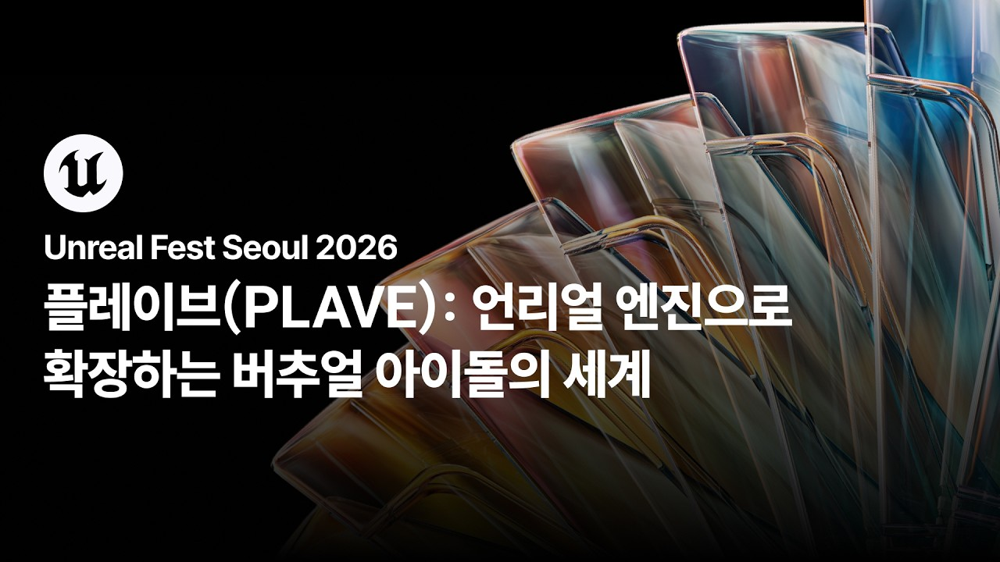

主題節目分類：YOUTUBE發布日期：2026-10-12—2026 首爾 Unreal Fest｜PLAVE：透過 Unreal Engine 拓展虛擬偶像的世界2026 首爾 Unreal Fest在今年8月舉行 字幕最後更新：2026-10-12在 YouTube 觀看原始影片×載入 YouTube 播放器 1010速度 0.75×1×1.25×1.5×2×00:00 / --:-- 繁中韓文雙語字幕大小20%字幕位置 原先位置懸浮字幕全螢幕劇院模式字幕外觀字幕樣式白字／黑底黑字／白底黃字／黑底白字描邊／無底底色透明度25%字幕高度2%恢復預設繁體中文點播放後，字幕會顯示在這裡韓文 分享這篇@fLINE𝕏 — 人喜歡這篇 這篇字幕對你有幫助嗎？ 0.0選擇 1～5 星 平均評分載入中展開雙語逐字稿 點擊查看完整內容雙語逐字稿雙語韓文繁中 自動跟隨播放文字大小 A−A＋重設字幕偏移（秒） 字幕比聲音早出現時填正數00:00:00안녕하세요. 블래스트의 CTO 유영훈입니다.大家好 我是 VLAST 的技術長 李賢宇(音譯)00:00:0924년도 언리얼 페스트에서 WAY 4 LUV 뮤직비디오 제작기라는 주제로 인사를2024 年 Unreal Fest 我以 WAY 4 LUV 音樂錄影帶製作歷程為題00:00:13드렸었고 그 후로 2년 만에 오늘은 언리얼 엔진으로 확장하는 버추얼 아이돌의與各位見面 時隔兩年 今天的主題是 透過 Unreal Engine 拓展虛擬偶像的世界00:00:17세계라는 주제로 다시 인사드리게 되었습니다. 이렇게 다시 찾아뵙게以這個主題再次與各位見面 能夠再次來到這裡00:00:21되어 반갑습니다.很高興見到大家00:00:27본격적인 발표에 앞서 오늘 발표의 방향에 대해서 짧게 먼저 좀正式開始前 我想先簡單說明今天演講的方向00:00:31말씀드리고 싶습니다. 최근에 Claude Code나 Codex 같은 에이전트 코딩의最近隨著 Claude Code 或 Codex 這類代理式程式開發工具00:00:35등장으로 기술 개발 환경이 급격하게 변화했습니다. 이제는 어떤 기능을出現 技術開發環境急速改變 現在只要決定要開發某項功能00:00:39만들겠다고 마음만 먹으면 과거하고는 비교할 수 없을 만큼 싸고 빠르게 만들就能以過去無法比擬的低成本與速度00:00:44수 있는 시대가 되었습니다. 그래서 예전에는 이걸 어떻게 구현하지가完成開發 因此 過去重要的問題是該如何實作00:00:48중요한 질문이었다면 지금은 뭘 해야 하지가 훨씬 중요한 질문이 되어 가고 있다고現在該做什麼 正逐漸成為更重要的問題00:00:52생각합니다. 그래서 오늘 발표는 이전 발표들과는我是這麼認為的 因此今天的演講與先前的演講00:00:56결이 조금 다릅니다. 지난 두 번의 발표에서는 라이브와 시네마틱의方向有些不同 前兩次演講中 我們針對直播與電影式影像00:01:00파이프라인을 저희가 구축하면서 겪었던 기술적인 문제점들하고 그 해결製作流程 詳細談了建置過程中遇到的技術問題00:01:04방법론을 꽤 디테일하게 다뤘었는데요. 구체적인 구현 방법을 공유하는 것이以及解決方法 當時談得相當詳細 而分享具體的實作方式00:01:10예전만큼 큰 의미를 갖기가 어렵다고 이제 생각을 하기 때문에 오늘은 그런如今已難以像過去一樣具有重大意義 因此今天00:01:14기술적인 깊이는 되게 얕게 가져가려고 합니다. 그 대신 저희가 언리얼不會深入探討技術細節 而是介紹我們透過 Unreal Engine00:01:18엔진을 통해서 지금까지 어떤 시도를 해 왔었고 앞으로 또 어떤 도전을至今做過哪些嘗試 未來還打算迎接哪些挑戰00:01:22하려고 하는지 무엇을 왜 만들었는지에 초점을 맞춰 가지고 소개를並聚焦在我們做了什麼 為什麼要做00:01:25드리겠습니다. 그래서 기술 세션이지만向各位介紹 因此雖然是技術場次00:01:29비전문가분들도 편하게 들으실 수 있는 발표가 될 것 같고요. 그리고相信非專業人士也能輕鬆聽懂00:01:33기술적인 디테일이 좀 궁금하셨던 전문가분들께서는 Q&A 시간에 질문을想了解技術細節的專業人士 可以在問答時間00:01:37디테일하게 주시면 제가 최대한 답변드릴 수 있는 선에서 답변드려提出具體問題 我會在能回答的範圍內盡力00:01:41보겠습니다.為各位解答00:01:46오늘 발표는 크게 두 개의 목차로 구성되어 있습니다. 먼저 첫 번째今天的演講主要分成兩部分 首先第一部分00:01:49목차는 언리얼 엔진 기술이 확장하는, 언리얼 엔진 기술 확장이 만드는是 Unreal Engine 技術所拓展的 應該說是 Unreal Engine 技術拓展所創造的00:01:54새로운 팬 경험입니다. 마지막 발표 이후 지난 2년 동안 저희가 새롭게全新粉絲體驗 我會介紹上次演講後 這兩年來我們的新嘗試00:01:58시도해 왔던 부분들, 그리고 그 과정에서 얻은 발전들을 소개드리려고 합니다.以及在過程中取得的進展00:02:03그리고 두 번째 목차는 버추얼 아이돌 경험의 다음 단계입니다. 여기서는第二部分是虛擬偶像體驗的下一階段 在這部分00:02:07저희가 앞으로 팬분들에게 선보이려고 하는 완전히 새로운 경험에 대해서我們將介紹未來希望帶給粉絲的全新體驗00:02:11소개드리려고 합니다.向各位說明00:02:16그럼 첫 번째 목차부터 시작하겠습니다.那就從第一部分開始00:02:21먼저 그동안의 시네마틱 영상 퀄리티 성장에 대해서 다루려고 합니다.首先談談這段期間電影式影像品質的提升00:02:28Dash 뮤직비디오가 공개됐을 때 WAY 4 LUV 때에 비해서 기술이 엄청나게Dash 音樂錄影帶公開時 相較於 WAY 4 LUV00:02:32좋아졌다는 평가를 많이 받았었습니다. 그런데 이번 Born Savage에서는 그 Dash에서我們獲得許多技術大幅進步的評價 而這次 Born Savage 又在 Dash 的基礎上00:02:38다시 한번 퀄리티가 크게, 크게 뛰어올랐고 이번에도 많은 분들이 또讓品質再次大幅 大幅提升 這次也有許多人認為00:02:42기술이 한 번 더 발전했다고 생각을 해 주셨는데요.我們的技術又往前進了一步00:02:50그런데 사실 시네마틱 제작 기술은 WAY 4 LUV 제작기에서 발표한 이후로但實際上 自從分享 WAY 4 LUV 的製作歷程後00:02:54저희가 새롭게 개발한 기술이 없습니다. WAY 4 LUV 제작을, WAY 4 LUV我們沒有開發新的電影式影像製作技術 透過 WAY 4 LUV 的00:02:58제작 과정을 통해서 시네마틱 영상 제작 및 렌더링 측면에서 이 기술은製作過程 我們認為在電影式影像製作與渲染方面00:03:02이미 완전히 성숙했다고 생각하고 있고요.這套技術已經完全成熟00:03:07그래서 Dash 뮤직비디오를 제작할 때부터 이미 시네마틱 제작은 기술팀의因此從製作 Dash 音樂錄影帶開始 電影式影像製作就已經00:03:11지원 없이 진행되었고 심지어 이번 Born Savage 뮤직비디오는 저조차도不需要技術團隊支援 甚至這次 Born Savage 音樂錄影帶 連我也是00:03:15유튜브에 공개된 이후에야 처음 봤을 정도였습니다.等到 YouTube 公開後才第一次看到00:03:18두 작품 모두 온전히 아티스트들의 힘만으로 완성된 결과물입니다.這兩部作品都完全由美術創作者獨力完成00:03:24지난 2년 동안 저희가 쓴 도구는 크게 달라지지 않았습니다. 기술이過去兩年 我們使用的工具沒有太大改變 技術00:03:28새롭게 기여한 것은 없었고 작품을 거듭하면서 쌓이는 경험과 감각, 협업沒有帶來新的貢獻 而是隨著作品累積的經驗與敏銳度 以及協作00:03:32과정과 같은 인간적인 노력이 매년 수준을 끌어올렸습니다.過程等人的努力 每年都讓水準更上一層樓00:03:36밖에서 보실 때에는 저희를 기술이 뛰어난 회사로 봐 주시지만 정작從外界來看 大家認為我們是一家技術出色的公司 但實際上00:03:40CTO인 저는 이제는 기술보다도 구성원들의 경험과 성장, 그리고 함께身為技術長 我認為比起技術 成員的經驗與成長 以及共同00:03:44일하는 문화가 훨씬 중요해지고 있다고 생각합니다. 기술적인工作的文化 如今變得更加重要 在應該分享技術00:03:48경험을 말씀드려야 하는 자리에서 새로운 기술적 시도가 없었다는經驗的場合 卻說我們沒有做新的技術嘗試00:03:51이야기를 꺼내는 게 조금 어색할 수도 있는데요. 그럼에도 이런 말씀을或許有點不太合適 但我仍然提出這一點00:03:55드리는 이유는 최근 기술 개발이 너무 쉬워지면서 기술이 모든 걸 해결해 줄是因為最近技術開發變得非常容易 越來越多人認為技術能解決一切00:03:59것처럼 말하는 사람들이 늘어나지만 기술이 아무것도 아닌 게 되기 때문에然而當技術變得不再稀奇00:04:04역설적이게도 오히려 이제 진정한 차이를 만드는 건 사람이 되어 가고反而出現一種矛盾 真正創造差異的 正逐漸變成了人00:04:07있다고 생각합니다. 이런 인간적인 노력과 성장, 사람 사이의 협업이 더我是這麼認為的 人的努力與成長 以及人與人之間的協作00:04:11중요해질 수도 있다는 것을 먼저 말씀드리고 싶었습니다.可能會變得更加重要 我想先向各位傳達這一點00:04:18다음으로 소개해 드리고 싶은 것은 저희가 작년부터 도입한 멀티캠의接下來想介紹的是 我們從去年開始導入的多機位00:04:22도입입니다. 팬분들께서는 작년 콘서트의 온라인系統 粉絲應該是在去年演唱會的線上00:04:26콘서트에서 멀티뷰를 통해 이 멀티캠 기능을 처음 경험하셨을 것直播中 透過多視角觀看 首次體驗到多機位功能00:04:31같은데요. 여러 대의 카메라 화면 중에서 내가 보고 싶은 화면을 골라서也就是從多台攝影機的畫面中 自行選擇想看的畫面00:04:35볼 수 있었던 그 기능입니다.來觀看的功能00:04:39현실 세계의 방송에서 이 멀티캠은 대단할 게 없는 기능인데요. 카메라를在現實世界的轉播中 多機位並不是什麼了不起的功能 只要架設00:04:44여러 대 두고서 각각 송출하면 그만이기 때문입니다. 그런데 버추얼多台攝影機 分別傳送畫面就好 但在虛擬00:04:48아이돌 세계에서는 이 멀티캠을 구현하는 것이 의외로 굉장히 어려운 작업이偶像的世界裡 要實現多機位 卻意外地非常困難00:04:52됩니다.成了一項艱鉅的工作00:04:56왜 어려운지 잠깐 설명을 드리면요. 언리얼 엔진 안에는 당연히 여러我簡單說明為什麼困難 Unreal Engine 裡當然有多台00:05:00대의 가상 카메라가 존재합니다. 하지만 이 가상 카메라들을 모두 동시에虛擬攝影機 但並不是同時對所有虛擬攝影機00:05:06렌더링하는 것은 아닙니다. PC 한 대에서 여러 대의 카메라를進行渲染 如果想在一台電腦上 對多台攝影機00:05:10렌더링하려고 하면 그만큼 카메라를 렌더링하는 수에 비례해서進行渲染 顯示卡的負載就會隨著渲染的攝影機數量00:05:14그래픽 카드의 부하도 두 배, 세 배로 늘어나기 때문입니다.成比例地增加到兩倍 三倍00:05:21그래서 저희처럼 실시간으로 고품질 렌더링을 해야 하는 환경에서는因此在我們這種必須即時進行高品質渲染的環境中00:05:24결국 PC 한 대당 카메라를 한 대만 렌더링할 수밖에 없게 되고요.最終每台電腦只能渲染一台攝影機00:05:32그러면 카메라 수만큼 PC를 늘리면 되지 않느냐 생각할 수도 있지만或許會認為 按攝影機數量增加電腦不就好了嗎?00:05:35여기서 또 하나의 새로운 병목이 생깁니다. 바로 사람입니다.但這時又會出現新的瓶頸 就是人00:05:41사람이 한 손으로 동시에 컨트롤할 수 있는 PC 대수에는 한계가一個人用一隻手 能同時控制的電腦數量是有上限的00:05:44있습니다. 저희가 이전에 자체 콘텐츠를 진행하면서 오퍼레이터 한 명이 PC를我們以前製作自製內容時 曾有一位操作人員00:05:48거의 다섯 대까지 동시에 컨트롤한 적도 있었는데 키보드, 마우스 다섯同時控制將近五台電腦 看他在五組鍵盤與滑鼠00:05:52세트를 왔다 갔다 하면서 오퍼레이팅하는 모습을 보면之間來回操作的樣子00:05:54오퍼레이터가 거의 천수관음처럼 보입니다.操作人員簡直就像千手觀音00:06:00이런 식의 극한의 멀티태스킹을 해야 되는 환경에서 오퍼레이팅하게 되면在這種必須極限多工的環境下操作00:06:04그만큼 실수도 당연하게 늘어날 수밖에 없게 되고요. 일상적인失誤自然也難免增加 在日常00:06:08운영에서는 한 사람당 최대 세 대 정도까지가 동시에 오퍼레이팅 가능한運作中 每人同時操作的上限 大約就是三台00:06:12한계였습니다. 그래서 새 스튜디오로 이전할因此搬遷到新攝影棚00:06:15때는 멀티캠 송출과 녹화를 제대로 구현하기 위해서 스튜디오의 하드웨어時 為了完整實現多機位訊號傳送與錄製 我們從攝影棚的硬體00:06:19구성부터 오퍼레이팅 방식까지 라이브 시스템 전반을 완전히 새롭게配置到操作方式 對整套直播系統00:06:23설계했었습니다.進行了徹底的重新設計00:06:28크게 세 가지 개선이 있었는데요. 먼저 첫 번째는 다중 인스턴스主要有三項改善 首先第一項是多執行個體00:06:31오퍼레이팅 시스템입니다. 먼저 오퍼레이터는 동시에 구동하는操作系統 我們認為 無論同時運作的00:06:36PC가 몇 대이든 항상 하나의 PC만으로 모두를 제어할 수 있어야電腦有多少台 操作人員都應該只用一台電腦00:06:39한다고 생각했습니다.就能控制所有電腦00:06:44현재 저희 스튜디오에서는 총 12대의 언리얼 PC가 동시에 구동되고目前攝影棚內共有 12 台執行 Unreal Engine 的電腦同時運作00:06:47있습니다. 하지만 오퍼레이터는 항상 하나의 PC에서만 조작을但操作人員始終只在一台電腦上00:06:51수행합니다. 특정 클라이언트에서 변경 사항을進行操作 在特定用戶端提交00:06:54커밋할 경우 나머지 인스턴스 전체로 변경 사항 동기화가 자동으로變更後 變更內容會自動同步到其餘所有執行個體00:06:58전파되고요. 그리고 자동으로 씬을 연 다음에 전체 화면 플레이 상태로接著自動開啟場景 並以全螢幕播放模式00:07:03방송 스탠바이에 들어가게 됩니다. 이 구조 덕분에 언리얼 인스턴스가進入直播待命狀態 有了這套架構 無論 Unreal Engine 執行個體00:07:09몇 대가 동시에 구동되고 있든 오퍼레이터는 훨씬 낮은 인지적인同時運作多少個 操作人員都能以更低的認知00:07:13부하로 전체를 오퍼레이팅할 수 있게 되었습니다.負荷 操作整套系統00:07:20두 번째는 라이브 서버 및 클라이언트 구조의 도입입니다.第二項是導入直播伺服器與用戶端架構00:07:24라이브에는 여러 네트워크 스트림 처리가 필요한데 클라이언트 수가 늘어나면서直播需要處理多種網路串流 隨著用戶端數量增加00:07:28이전과 같이 PC마다 개별적으로 신호를 보내 주는 방식이 불가능해지게像過去那樣 個別向每台電腦傳送訊號的方式00:07:31되었습니다. 예를 들어 특정 이벤트를 트리거할 때便無法繼續使用 例如要觸發特定事件時00:07:35사용하는 Stream Deck이라는 장비를 사용하는데 이 장비는 동시에我們會使用名為 Stream Deck 的設備 但這項設備若同時00:07:38세 대 이상의 PC에 신호를 주려고 하면 Stream Deck이 버벅거리거나向三台以上的電腦傳送訊號 Stream Deck 就會卡頓00:07:43신호가 늦게 송출되는 등 신호가 굉장히 불안정해지는 문제가或是延遲傳送訊號 造成訊號極不穩定的問題00:07:46발생합니다.這些問題就會出現00:07:49그래서 이런 문제를 해결하기 위해서 모든 네트워크 신호를 일괄적으로因此為了解決這些問題 我們導入了統一接收所有網路訊號00:07:53수신하고 모든 클라이언트로 브로드캐스팅해 주는 라이브 서버並廣播給所有用戶端的直播伺服器00:07:57클라이언트 구조를 도입하게 되었고요. 여러 신호 장비들은 클라이언트가 몇與用戶端架構 各種訊號設備無論用戶端有多少00:08:01대이든 상관없이 항상 두 대의 서버로만 신호를 보내기 때문에 가볍게台 始終只向兩台伺服器傳送訊號 因此能以較低負擔00:08:05신호를 보낼 수 있고 서버는 모든 신호를 수신한 뒤에傳送訊號 伺服器接收所有訊號後00:08:10필요한 계산을 수행하고 그 결과만을 모든 클라이언트로 브로드캐스팅해 주게執行必要的運算 再將結果廣播給所有用戶端00:08:14됩니다. 이 구조를 통해서 저희는 10대 이상의 PC로도 안정적으로透過這套架構 即使有十台以上的電腦 也能穩定地00:08:19네트워크 신호를 처리하고 동기화할 수 있게 되었습니다.處理網路訊號並同步00:08:24세 번째는 이중화 백업 시스템입니다. 서버 클라이언트 구조의 문제점은 서버第三項是備援系統 伺服器與用戶端架構的問題在於00:08:29한 대에서만 장애가 생겨도 모든 클라이언트가 한 번에 장애를 겪게 된다는即使只有一台伺服器故障 所有用戶端也會同時受到影響00:08:33점입니다. 그리고 멀티뷰 콘서트를 위해서는這是它的問題 此外 為了多視角演唱會00:08:37저희가 최소 일곱 대의 카메라를 항상 안정적으로 렌더링하고 있어야我們必須始終穩定地渲染至少七台攝影機00:08:40합니다. 클라이언트에 요구되는 기준도 크게 높아지게 되었고요. 그래서因此對用戶端的要求也大幅提高00:08:45서버나 클라이언트에 장애가 발생할 경우 즉시 백업 대응을 할 수 있도록為了在伺服器或用戶端故障時立即啟用備援00:08:49서버 한 대와 클라이언트 두 대까지 이중화 백업을 구성하게 되었습니다.我們配置了一台備援伺服器與兩台備援用戶端00:08:57때문에 특정 인스턴스에 장애가 발생할 경우 최대 1초 이내로 백업因此特定執行個體故障時 備援執行個體最遲會在一秒內00:09:01인스턴스가 자동으로 백업을 수행하게 됩니다.自動接手運作00:09:07예를 들어 라이브 도중에 메인 서버 또는 클라이언트 중 최대 두 대까지例如直播期間 主伺服器或最多兩台用戶端00:09:11장애가 발생할 경우에 이렇게 백업 대기 상태에 있던 이중화發生故障時 原本處於備援待命狀態的備援00:09:16인스턴스가 자동으로 장애가 발생한 인스턴스의 역할을 백업하게 됩니다.執行個體 就會自動接手故障執行個體的工作00:09:25이런 개선 덕분에 작년 온라인 콘서트에서 멀티뷰를 처음으로 도입해有了這些改善 去年的線上演唱會首次導入了多視角00:09:29볼 수 있었고요. 그리고 더 많은 채널을 현장으로 송출할 수 있게功能 也能向現場傳送更多頻道的畫面00:09:32되면서 현장 연출의 옵션도 크게 늘어나게 되었습니다.讓現場演出的呈現方式大幅增加00:09:36안정성 측면의 변화도 체감이 큽니다. 스튜디오를 저희가 이사하기 전까지는穩定性的提升也很有感 在攝影棚搬遷之前00:09:41언리얼 엔진에 문제가 발생할 경우 화면으로 전환하는 일이 굉장히Unreal Engine 發生問題時 切換畫面的情況00:09:44잦았었는데요. 이제는 빠르게 백업 전환이非常頻繁 現在能夠迅速切換到備援00:09:47가능해지면서 최근 1년 사이에는 그런 일이 매우 드물어졌습니다.因此最近一年 這種情況已經非常少見00:09:52그리고 이런 시스템의 획기적인 개선이 있었기 때문에 작년부터 저희가 첫也因為系統有了這些突破性的改善 從去年開始 我們得以首次00:09:55해외 투어에도 도전할 수 있게 되었고요. 물론 일부 공연에서는挑戰海外巡演 當然有些演出中00:09:59현장에서의 불가항력적인 네트워크 문제나 장비 문제로 몇몇還是因為現場不可抗力的網路或設備問題00:10:03문제를 겪기도 했었습니다만 기술을 통해서 저희 무대를 새로운 지역으로遇到了一些狀況 但透過技術 將我們的舞台帶到新的地區00:10:08새로운 팬분들에게 확장할 수 있었던 좋은 경험이었습니다.呈現給新的粉絲 是一次很好的經驗00:10:14지금 보시는 영상이 저희가 스튜디오에서 10대 이상의 언리얼을各位現在看到的影片 是我們在攝影棚內同時操作十個以上 Unreal Engine00:10:18실시간으로 오퍼레이팅하고 있는 화면이고요.執行個體的即時操作畫面00:10:24그리고 다음으로는 올해 저희가 더현대 서울 팝업에서 시도했던 첫 VR接下來是我們今年在 The Hyundai Seoul 快閃活動中 首次嘗試的 VR00:10:28콘텐츠 얘기인데요. 사실 아직 사업단에서는 VR 콘텐츠를 할 계획이內容 其實當時業務部門還沒有製作 VR 內容的計畫00:10:34없었는데 저희 내부 직원들이 이번엔 우리도 반드시 VR을 해야만 한다고但公司內部員工強烈主張 這次我們也一定要做 VR00:10:39강력하게 주장해 주셔서 급하게 R&D를 하면서 이번 팝업에因此我們緊急展開研發 將它納入這次快閃活動00:10:43들어가게 되었습니다. 추후 VR 콘서트의 가능성을 탐색하기這項嘗試是為了探索未來 VR 演唱會的可能性00:10:47위한 목적이었고요. 그래서 더현대 팝업에서는 간단한 프로토타입으로서因此在 The Hyundai 快閃活動中 我們先以簡單的原型00:10:51진행을 먼저 해 봤었습니다.進行嘗試00:10:57처음 시작할 때 VR 렌더러에서 저희 룩을 그대로 구현하는 작업에 되게剛開始時 我們預期要在 VR 渲染器中完整呈現原有的視覺風格00:11:01많은 어려움을 예상했었는데 의외로 기존의 셰이더로도 아주 어려운 이슈가會遇到許多困難 但意外地 使用既有的著色器也沒有出現非常棘手的00:11:05발생하지는 않았습니다. 버추얼 텍스처라든지 Lumen이나 스크린 스페이스問題 像是虛擬紋理 Lumen 或螢幕空間00:11:10같은 일부 그래픽 렌더링에서 아티팩트가 발생하기는 했었는데等部分圖形渲染功能 確實有出現影像瑕疵00:11:15대부분 간단하게 끄거나 하는 방식으로 많이 해결됐었고요.但大多只要關閉相關功能 就能簡單解決00:11:19그보다는 렌더링 시간이 문제였습니다. 일반적인 16 대 9 렌더링은相比之下 渲染時間才是問題 一般 16 比 9 的渲染00:11:233840 × 2160 해상도인데 VR 렌더링은 괜찮은 화질로 보여 주기解析度是 3840 × 2160 但 VR 渲染若要呈現不錯的畫質00:11:28위해서는 16K × 8K 해상도로 렌더링이 필요합니다.就必須以 16K × 8K 的解析度渲染00:11:34그래서 저희가 렌더링 시간을 줄이기 위해서 360도로 전체를 렌더링한因此為了縮短渲染時間 我們沒有渲染完整的 360 度畫面00:11:40게 아니라 전방 반구만을 렌더링해서 해상도를 전면에 집중시키고而是只渲染前方半球 將解析度集中在前方00:11:448K × 4K로 렌더링한 뒤에 업스케일링을 돌리는 방식으로 일부 개선을以 8K × 4K 渲染後 再進行升頻處理 透過這種方式改善了一部分00:11:48하기는 했었는데요. 그래도 일반 영상 콘텐츠에 비하면 상당한 렌더링但與一般影片內容相比 仍然需要相當長的渲染00:11:52시간이 필요합니다. 물리적인 해상도의 문제라서 이게時間 這是實際解析度帶來的問題00:11:56특별히 해법이 있는 것 같지는 않고요. 온디맨드 클라우드 렌더팜을 구축하는似乎沒有特別的解法 我們打算建置隨需使用的雲端渲染農場00:12:00방식으로 다음에는 추가 개선을 하려고 생각하고 있습니다.在下次進一步改善00:12:08전반적으로 어려운 문제는 없었고요. 그보다는 VR 콘텐츠를 볼整體來說 沒有太困難的問題 相比之下 在觀看 VR 內容00:12:13때 심쿵하는 거리감 같은 것의 감을 잡는 문제가 훨씬 중요했던時 要掌握讓人心動的距離感 反而是更重要的00:12:16작업이었습니다. 이번 팝업을 통해서 VR 제작이工作 透過這次快閃活動 我們確認 VR 製作00:12:20기술적으로 가능하다는 것을 확인했고요. 팬분들의 현장 반응도在技術上可行 粉絲的現場反應也00:12:24매우 좋았기 때문에 다음에는 VR 콘서트로 선보일 수 있도록 준비를非常好 因此我們正在準備 希望下次能以 VR 演唱會的形式00:12:28하고 있습니다.與大家見面00:12:34이제 두 번째 목차, 버추얼 아이돌 경험의 다음 단계를 소개드리겠습니다.接下來介紹第二部分 虛擬偶像體驗的下一階段00:12:43플레이브의 첫 공식 앱인 ASTERUM 앱이 오늘 Google Play와 App Store에PLAVE 首款官方 App ASTERUM 今天將登上 Google Play 與 App Store00:12:52시연 행사에서 처음 공개했던 앱입니다. 당시 현장에서 직접 체험해首次在展示體驗活動中公開 當時親自在現場體驗的00:12:56주신 팬분들의 반응을 토대로 그 이후에 보완과 정식 개발 과정을粉絲提供了回饋 我們依據這些反應 進行改善與正式開發00:13:00거쳐서 드디어 오늘 선보일 수 있게 되었습니다.終於能在今天推出00:13:06ASTERUM 앱은 언리얼 엔진 모바일 개발을 통해서 플레이브의 활동을ASTERUM App 透過 Unreal Engine 行動平台開發00:13:10모바일에서도 그대로 재현하고 감상할 수 있도록 개발되었습니다.讓 PLAVE 的活動能在行動裝置上完整重現並供粉絲欣賞00:13:14ASTERUM 앱은 크게 두 가지 목적으로 개발되었습니다.ASTERUM App 的開發主要有兩個目的00:13:19첫 번째 목적은 플레이브의 역대 활동을 조금씩 ASTERUM 앱으로第一個目的 是逐步將 PLAVE 歷年的活動移至 ASTERUM App00:13:23옮겨 가고 이를 팬분들이 원하는 방식으로 다시 감상할 수 있도록 아카이빙하는讓粉絲能以自己喜歡的方式重新欣賞 並將這些活動加以典藏00:13:27것입니다.這就是第一個目的00:13:30그리고 두 번째 목적은 아카이빙에서 더 나아가서 점차 아티스트와의 소통第二個目的 是在典藏之外 逐步發展成與藝人互動的00:13:34플랫폼으로 발전시켜 나가는 것입니다. 아직 오픈 베타 버전인 현재까지는平台 目前仍處於公開測試版本00:13:39활동 아카이빙 기능에 집중하고 있고요. 차차 여러 방식으로所以先專注於活動典藏功能 未來會逐步以不同方式00:13:42아티스트와 소통이 가능한 창구로서도 그 역할을 넓혀 갈 예정입니다.擴展功能 成為能與藝人互動的管道00:13:47그럼 ASTERUM 앱에 어떤 기능들이 담겨 있는지 하나씩 소개를接下來逐一介紹 ASTERUM App 中有哪些功能00:13:50드리겠습니다.向各位說明00:13:54먼저 From. PLAVE 메시지 기능입니다.首先是 From PLAVE 訊息功能00:14:12여기서 나랑 편안한 시간 보내요. 우리 뭐부터 할까요?在這裡和我一起輕鬆度過這段時間吧 我們要先做什麼呢?00:14:27안녕 PLLI. ASTERUM에 온 걸 환영해. 우리들의 공간을 PLLI에게도 보여 줄 수嗨 PLLI 歡迎來到 ASTERUM 能把我們的空間也展示給 PLLI00:14:33있게 되어서 너무 두근거려. 어때?讓我好心動 覺得怎麼樣?00:14:40예전에 공식 카페에 있었던 From. PLAVE 게시판처럼 멤버가 전하는就像以前官方粉絲社群的 From PLAVE 討論板 可以閱讀成員傳達的00:14:44글을 볼 수 있으면서 여기에 더해서 해당 메시지의 영상편지를 받아 볼 수文字訊息 此外也能收到該則訊息的影音信件00:14:48있는 기능입니다. 앞으로 멤버분들이 전하는 메시지가 From. PLAVE를這就是這項功能 未來成員傳達的訊息 將透過 From PLAVE00:14:53통해서 들어오게 될 예정입니다. 그리고 기존에 유튜브에 저희가送到這裡 此外 過去我們在 YouTube00:14:57업로드하던 새해 인사나 설날 인사, PLLI 생일 인사와 같은 영상들도上傳的新年祝福 農曆新年祝福與 PLLI 生日祝福等影片00:15:01앞으로는 데이터를 함께 녹화해서 From. PLAVE 메시지로도 동시에未來也會同步錄製資料 並以 From PLAVE 訊息的形式00:15:05제공하여 앱 안에서도 내가 보고 싶은 구도로 다시 한번 받아 볼 수一起提供 讓粉絲在 App 中 也能以自己想看的構圖再次觀看00:15:09있게 됩니다.這些內容00:15:14다음은 피팅룸 기능입니다. 저희가 24년도 언리얼 페스트에서 내부接下來是試衣間功能 我們曾在 2024 年 Unreal Fest00:15:18시스템으로서 소개를 드리기도 했었는데요. 이 기능이 ASTERUM將它作為內部系統介紹過 如今這項功能已正式在 ASTERUM00:15:21앱으로 공식 구현되어서 ASTERUM 앱에서 플레이브 역대 활동 의상들을App 中實現 可以在 ASTERUM App 中瀏覽 PLAVE 歷年的活動服裝00:15:25둘러보고 자유롭게 조합해 볼 수 있습니다. 아직까지는 역대 앨범 활동並自由搭配 目前只有歷年專輯活動的00:15:30의상들만 들어가 있지만 앞으로는 라이브 방송을 포함해서 저희가服裝 但未來也會包含直播在內 將我們00:15:34지금까지 활동 중에 입었던 모든 의상이 ASTERUM 앱 안으로 들어오게 될至今活動中穿過的所有服裝 都加入 ASTERUM App00:15:38예정입니다.這是我們的規劃00:15:49PLLI잖아. 나 지금 마중 나갈게.是 PLLI 耶 我現在就出去接你00:15:53짠. 이건 PLLI만을 위한 내 환영 편지.鏘鏘! 這是我專門寫給 PLLI 的歡迎信00:15:57그리고 피팅룸에서 이렇게 완성한 나만의 코디로 커스텀 포토카드를接著可以用在試衣間完成的專屬穿搭 拍攝自訂小卡00:16:02촬영하고 컬렉션을 구성할 수 있고요. 원하는 구도와 의상으로並建立收藏 透過喜歡的構圖與服裝00:16:06마음에 드는 순간을 포착하여 나만의 포토카드를 소장하고 이捕捉喜愛的瞬間 收藏專屬小卡 而這些00:16:10포토카드를 의상 세트 변경이나 무대 감상에서 활용하실 수 있습니다.小卡也能用於更換整套服裝 或欣賞舞台演出00:16:14이건 PLLI만을 위한 내 환영 편지.這是我專門寫給 PLLI 的歡迎信00:16:19배경 기능은 ASTERUM 세상의 다양한 장소를 감상할 수 있는 기능입니다. 이背景功能可以讓粉絲欣賞 ASTERUM 世界中的各種場所 這些00:16:23배경은 뒤에서 소개드릴 무대 감상 기능에서도 활용하실 수 있습니다.背景也能用在稍後介紹的舞台欣賞功能中00:16:28지금은 로비와 무대의 배경을 바꾸는 데에만 사용되지만 나중에는 마치 방을 꾸미듯目前只能用來更換大廳與舞台背景 未來則規劃像布置房間一樣00:16:33배경에 소품을 배치하면서 내 마음대로 공간을 꾸밀 수 있도록 계획하고在背景中擺放道具 隨心所欲地布置空間00:16:36있습니다.這是我們的規劃00:16:41포토카드 바인더 기능은 역대 활동 포토카드들을 수집하고 감상하고小卡收藏冊功能 可以收集與欣賞歷年活動的小卡00:16:45꾸밀 수 있는 기능입니다. STARSHARD 같은 실물也可以進行裝飾 像 STARSHARD 這類實體00:16:49포토카드의 재질감이 모바일에 그대로 구현되어 있고요. 앨범의小卡的材質感 也完整呈現在行動裝置上 可以收集專輯00:16:53포토카드를 수집하고 슬리브를 끼우면서 바인더를 꾸밀 수도 있습니다.小卡 加上卡套 並裝飾收藏冊00:16:57앞서 피팅룸에서 직접 찍은 커스텀 포토카드도 이 바인더 안에서 함께剛才在試衣間親自拍攝的自訂小卡 也可以放在這本收藏冊中一起00:17:01감상하실 수 있습니다.欣賞00:17:08그리고 가장 소개해 드리고 싶은 무대 감상 기능입니다.接下來是我最想介紹的舞台欣賞功能00:17:34플레이브의 수많은 무대 활동은 모두 모션 캡처 데이터로 보존되어PLAVE 的眾多舞台演出 都以動作捕捉資料的形式保存00:17:38있습니다. 이 녹화된 모션 캡처 데이터가 ASTERUM 앱 안으로 그대로這些錄製的動作捕捉資料 會原封不動地加入 ASTERUM App00:17:42들어오게 되고요. 과거 무대를 내가 원하는 의상과 내가 원하는 배경에서讓粉絲以自己想要的服裝與背景00:17:46내가 원하는 카메라 구도로 감상할 수 있는 기능입니다.以及喜歡的攝影機構圖 欣賞過去的舞台演出00:17:50스테이지 기능 안에서 팬분들은 각 멤버의 가로, 세로 직캠을 자유롭게在 Stage 功能中 粉絲可以自由欣賞各成員的橫式與直式個人直拍00:17:54감상하실 수 있고요. 그리고 풀샷이나 탑뷰 등 전체적인 안무 동선을也可以透過全景或俯視角度 觀看整體舞蹈的走位00:17:58감상하실 수도 있습니다. 아직은 네 개의 무대만 앱에 포함되어目前 App 中只收錄了四個舞台00:18:02있지만 제작 여력이 되는 대로 과거 무대들을 하나씩 앱 안으로 옮겨 올但會在製作量能允許時 逐一將過去的舞台移至 App00:18:05예정입니다. 그리고 곡 하나의 무대만此外 並不是每首歌只收錄一個舞台00:18:09들어오는 게 아니라 한 곡의 여러 안무 및 편곡 버전들도 들어올 예정입니다.同一首歌的不同編舞與編曲版本 也會陸續加入00:18:13예를 들어 기다릴게 곡의 경우에 음악중심 무대, 안무 연습,例如 Wait For You 可以收錄 Show! 音樂中心舞台 舞蹈練習00:18:18Rakuten GirlsAward나 25년도 콘서트에서 했던 기다릴게 무대 등Rakuten GirlsAward 或 2025 年演唱會中的 Wait For You 舞台等00:18:23다양한 무대 퍼포먼스 버전이 ASTERUM 앱 안으로 들어올 수 있습니다.各種舞台表演版本 都能加入 ASTERUM App00:18:28이전에 모두가 같은 영상으로 감상했던 무대들을 이제는 팬 한 분 한 분마다過去大家透過同一支影片欣賞的舞台 現在每位粉絲00:18:32저마다 다른 방식으로 다양하게 감상하실 수 있습니다.都能以各自不同的方式 多元地欣賞00:18:39ASTERUM 앱은 버추얼 아이돌만이 선보일 수 있는 방식이기에 저희가ASTERUM App 呈現的是只有虛擬偶像才能做到的方式 因此我認為00:18:43반드시 해야만 했던 도전이라고 생각합니다. 플레이브는 버추얼這是我們必須迎接的挑戰 PLAVE 雖然是虛擬00:18:47아이돌이지만 다른 아이돌들과 마찬가지로 그 콘텐츠가 지금까지는偶像 但和其他偶像一樣 至今內容都是00:18:51이미지와 영상을 통해서 팬분들에게 전달되어 왔습니다.透過圖片與影片 傳達給粉絲00:18:55이미지와 영상의 특징은 그 순간이 스냅샷으로圖片與影片的特點 在於將那個瞬間以快照的形式00:18:59고정되고 기록된 그대로만 감상할 수 있다는 점입니다.固定下來 只能按照記錄下來的樣貌欣賞00:19:04이런 측면에서 플레이브는 버추얼 아이돌이지만 기존 아이돌들과從這個角度來看 PLAVE 雖然是虛擬偶像 但與一般偶像00:19:08콘텐츠 포맷과 특성 면에서는 큰 차이가 없었습니다.在內容格式與特性上 並沒有太大差異00:19:13그런데 일반 아이돌들은 절대 할 수 없는 활동 방식이 하나 있는데요.但有一種活動方式 是一般偶像完全無法做到的00:19:16바로 ASTERUM 앱이 선보이는 방식, 디지털 영역입니다.就是 ASTERUM App 所呈現的方式 也就是數位領域00:19:20사실 많은 아이돌들이 디지털 영역으로 확장하기 위해서 수많은 애플리케이션을其實許多偶像為了拓展到數位領域 嘗試過許多應用程式00:19:24시도해 왔었습니다. 하지만 성공한 사례는 찾기가 매우但成功的案例卻非常00:19:27어렵습니다. 이유는 일반 아이돌은 디지털로難找 原因是一般偶像一旦轉移到數位00:19:30옮겨 가는 순간 전혀 다른 아바타의 모습이 되어 버리면서 원래 팬들이領域 就會變成完全不同的虛擬化身 失去原本粉絲00:19:34좋아하던 아이돌의 모습을 잃어버리기 때문입니다.所喜愛的偶像樣貌00:19:38반면 버추얼 아이돌은 ASTERUM이 보여 드린 것처럼 원래 플레이브의 모습而虛擬偶像就像 ASTERUM 所展示的 能保留 PLAVE 原有的樣貌00:19:42그대로 디지털 영역으로 확장할 수 있습니다. 그리고 버추얼 아이돌直接拓展至數位領域 此外 虛擬偶像00:19:46활동의 또 하나 결정적으로 다른 지점은 모든 활동이 모션 캡처와 같은活動還有另一項關鍵差異 就是所有活動都能以動作捕捉等00:19:50데이터로 보존되고 원하는 때에 원하는 방식으로 정확하게 동일하게資料的形式保存 並在想要的時間 以想要的方式 準確且完全相同地00:19:55재현을 다시 해 낼 수 있다는 점입니다.再次重現00:19:58ASTERUM은 이렇게 버추얼 아이돌만이 가지는 강점이 한데 모여 극대화되는 앱으로ASTERUM 是將這些虛擬偶像獨有的優勢 集中並充分發揮的 App00:20:02저희는 이 비전을 확인하고자 ASTERUM 앱을 만들게 되었습니다.我們為了驗證這個願景 開發了 ASTERUM App00:20:08앱이 플레이브가 아이돌로서 활동하는 데 필요한 제작 리소스를 가져가게 될지도各位可能會擔心 App 會占用 PLAVE 作為偶像活動時所需的製作資源00:20:12모른다고 우려하실 수도 있습니다. 그래서 ASTERUM 앱의 매우 높은 개발因此我也想說明 ASTERUM App 非常高的開發00:20:16효율에 대해서도 말씀드리고자 합니다. 먼저 ASTERUM 앱의 1차 목표가 기존效率 首先 正如我剛才提到 ASTERUM App 的首要目標00:20:21활동의 아카이빙이라고 말씀드렸던 것처럼 ASTERUM 앱에 들어오는是典藏既有活動 所以加入 ASTERUM App 的00:20:24에셋들은 이미 활동 중에 생성된 에셋들이 그대로 앱 안으로 들어오게素材 都是活動中已經製作好的素材 直接放入 App00:20:28됩니다. 예를 들어 가장 많은 리소스가 드는 무대는 기존 모션 캡처例如 最耗費資源的舞台 會重複利用既有的動作捕捉00:20:33데이터를 재사용하고 의상은 활동 중에 제작된 의상이 그대로 재사용되며資料 服裝則直接重複使用活動期間製作的服裝00:20:37포토카드도 이미 활동 중에 제작된 포토카드 이미지가 그대로 앱에서小卡也直接使用活動期間已經製作好的小卡圖片00:20:41재사용됩니다. 앱 내 콘텐츠 대부분이 플레이브 활동在 App 中再次使用 App 裡大部分內容 都是 PLAVE 活動00:20:45중에 생성되는 에셋들이 그대로 다시 앱에서 재사용되는 것이기 때문에期間產生的素材 在 App 中原樣重複使用00:20:49이처럼 지난 활동들을 ASTERUM 앱 안에 보존하고 다시 재현한다는像這樣把過去的活動保存在 ASTERUM App 中 並再次重現00:20:53의미에서 활동을 아카이빙한다고 표현했습니다.因此我以活動典藏來形容00:20:57이런 개발 효율 덕분에 ASTERUM 개발에는 단 한 명의 아티스트도 상시有了這樣的開發效率 ASTERUM 的開發完全沒有固定配置任何一位美術人員00:21:01작업 인원으로 배정되지 않았고요. TA와 개발자 여섯 명 정도만이 전담作為常駐工作人員 僅由 TA 技術美術與開發人員 約六人組成專責00:21:05인원으로 개발을 진행해 왔었습니다.團隊 持續進行開發00:21:11이로써 블래스트는 단일 IP 제작 파이프라인으로 그 영역을 시네마틱과因此 VLAST 透過單一 IP 製作流程 將領域從電影式影像00:21:16라이브 콘서트에서 더 나아가서 이제는 VR과 앱까지 확장하게與直播演唱會 進一步拓展到 VR 與 App00:21:20되었습니다. 콘텐츠 제작사로서 시작해서 이렇게 단일 파이프라인으로我們從內容製作公司起步 透過單一製作流程00:21:25애플리케이션까지 확장해 나가는 사례는 전 세계를 찾아봐도一路拓展到應用程式 這樣的案例 即使放眼全世界00:21:28저희가 유일한 레퍼런스일 거라고 생각합니다. Epic Games는 언리얼我認為我們應該是唯一的參考案例 Epic Games 將使用 Unreal00:21:33엔진을 사용하면 콘솔과 PC, 모바일 등 여러 플랫폼으로 크로스 플랫폼Engine 就能在遊戲主機 電腦與行動裝置等平台 進行跨平台00:21:37개발이 가능하다는 점을 강점으로 내세우지만 이는 게임 개발 분야에만開發這一點 視為優勢 但這項說法僅限於遊戲開發領域00:21:41국한된 이야기입니다. 저희 사례는 크로스 플랫폼을 통한 One Source Multi而我們的案例 透過跨平台實現 One Source Multi Use 一源多用00:21:45Use에서 한 발 더 나아가서 언리얼 엔진 하나로 모든 유형의 콘텐츠를在這個基礎上又往前一步 只用 Unreal Engine 就能製作所有類型的內容00:21:49제작하는 Cross Format 제작을 향해 나아가고 있다고 생각합니다. 저희는我認為我們正朝向 Cross Format 跨格式製作邁進00:21:53이러한 방식으로 지금까지 해 왔듯 앞으로도 블래스트와 플레이브만이 할 수如同我們至今採用的方式 未來也將透過只有 VLAST 與 PLAVE 能做到00:21:57있고 해야만 하는 도전들로 끊임없이 활동 영역을 넓혀 가고자 합니다.也必須迎接的挑戰 不斷拓展活動領域00:22:05여기까지 준비한 발표는 모두 마무리되었고요. ASTERUM 앱은以上就是今天準備的演講內容 ASTERUM App00:22:08오늘 오후 5시부터 App Store에서 설치하실 수 있습니다. Google Play는今天下午五點起 可以在 App Store 下載安裝 Google Play00:22:13이미 퍼블리시는 했는데요. 그런데 스토어에 노출되기까지 지연已經發布 不過商店顯示會有一些延遲00:22:17시간이 좀 있기 때문에 아마 오늘 중으로 확인하실 수 있을 것因此各位應該可以在今天之內00:22:20같습니다. 약 6주 동안 한국 오픈 베타 기간을 거치면서 혹시 모를看到 在韓國進行約六週的公開測試期間 我們會處理可能出現的00:22:25문제를 해결한 후에 정식 출시를 계획하고 있고요. 정식 출시問題 再正式推出 正式推出時00:22:28때에는 글로벌 출시를 목표로 하고 있습니다. ASTERUM 앱을 통해 버추얼以全球發行為目標 能透過 ASTERUM App 呈現只有虛擬00:22:32아이돌만이 가능한 새로운 경험을 선보일 수 있게 되어 되게 기쁘게偶像才能帶來的全新體驗 我感到非常高興00:22:35생각하고 앞으로도 플레이브에 많은 관심과 사랑 부탁드립니다.未來也請各位繼續給予 PLAVE 更多關注與支持00:22:39들어 주셔서 감사합니다.謝謝各位聆聽其他語音紀錄BEGRITZ LIVE EP10. 鬼怪健身俱樂部直播日期：2026-10-21BEGRITZBEGRITZ›時雨 스스 與時雨一起的下班之旅直播日期：2026-10-20WE GO-6 · WEGO-6 스스WE GO-6›羽然스스 你在哪裡呀~直播日期：2026-10-20WE GO-6 · WEGO-6 스스WE GO-6›【完整翻譯】CHAN 스스 大家好 我是 MOON CHAN 今天想和期待已久的大家開心地直播聊天 應該會很有趣吧 總之祝大家度過愉快的一天 哈哈直播日期：2026-10-20BEGRITZ · BERGITZ 스스BEGRITZ›